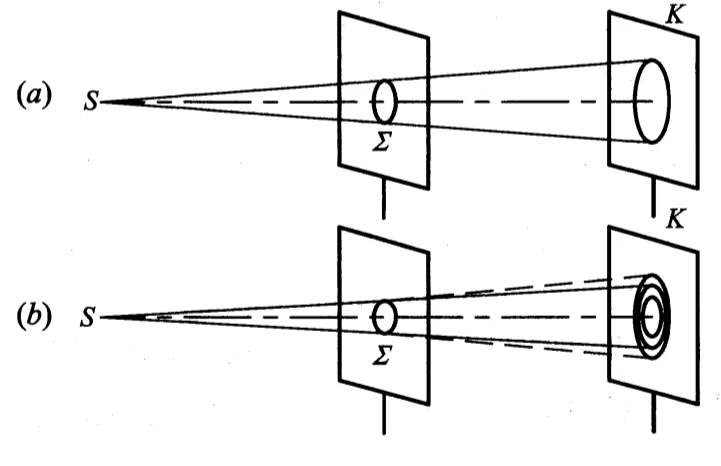
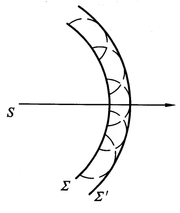

光波在传播过程中遇到障碍物时偏离直线传播的现象.
使一个足够亮的点光源S发出的光透过一个圆孔\(\Sigma\)，照射到屏幕K上，逐渐改变圆孔的大小.
圆孔足够大时，可以在屏幕上观察到一均匀光斑，光斑大小即为圆孔的几何投影.
随着圆孔逐渐减小，起初光斑也相应变小，而后光斑开始模糊，并在圆斑外面产生若干围绕圆斑的同心圆环.
使用单色光源时，是一组明暗相间的同心环带.
使用白色光源时，是一组色彩相间的彩色环带.
此后再使圆孔变小，光斑及圆环不仅不跟着变小，反而会增大.
对于波源S，在某一时刻所产生波的波阵面为\(Sigma\)，则\(Sigma\)面上的每一点都可以看作是次波源，它们发出球面次波.
其后某一时刻的波阵面\(\Sigma'\)，即是该时刻这些球面次波的包迹面.
离衍射孔不同距离处，衍射图样是不同的.
对于一个单色平面光波垂直照射圆孔\(Sigma\)的情况：
1、在距离\(\Sigma\)很近的K1处观察透过的光，将看到边缘清晰的光斑，光斑的形状与大小和圆孔基本相同，可以看作是圆孔的投影，此时光的传播可以大致视为直线传播.
2、在稍远距离K2上观察时，将看到一个边缘模糊的稍大光斑，光斑内有一圈圈的亮暗环，此时不能将其视为圆孔的投影.
由大量等间距、等宽度的平行狭缝所组成的光学元件。
缝是光栅的透光部分，宽度为\(a\)；刻痕是光栅的不透光部分，宽度为\(b\)。
\(a+b\)称为光栅常数。
光栅公式 $$(a+b)\sin\phi = k\lambda, ~~ k = 0,\pm1,\pm2,\cdots$$此为光栅衍射明条纹位置满足的公式。